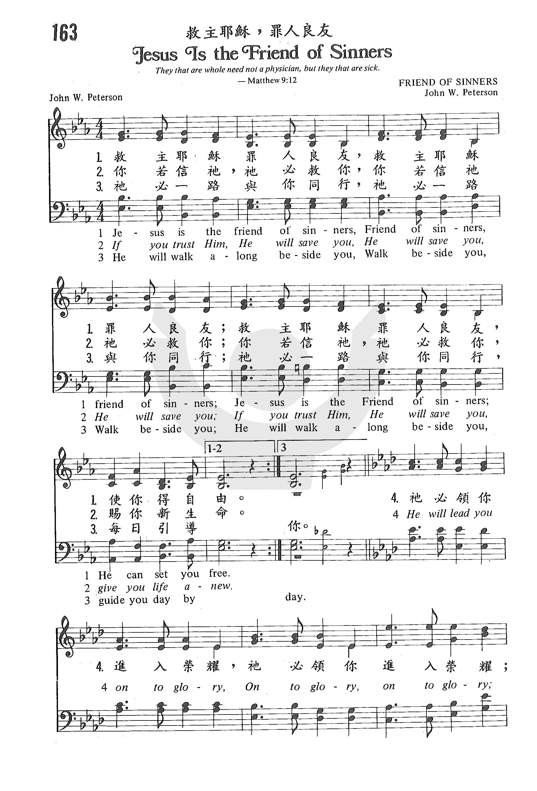
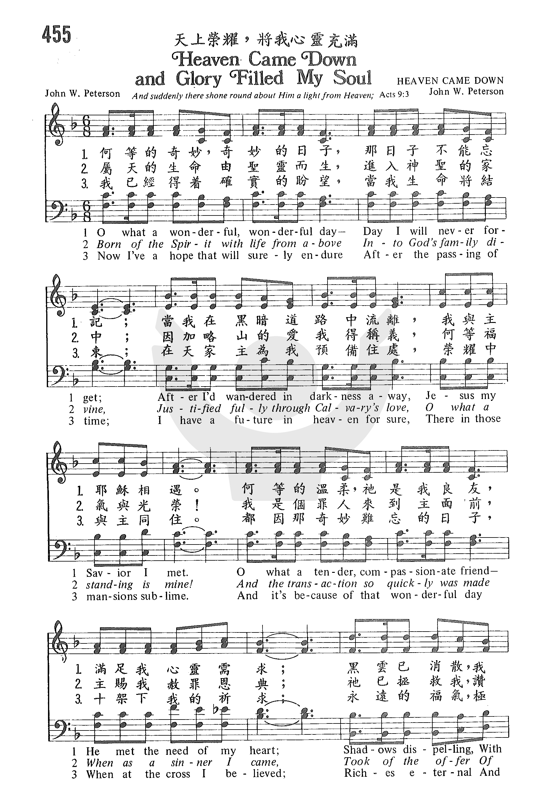
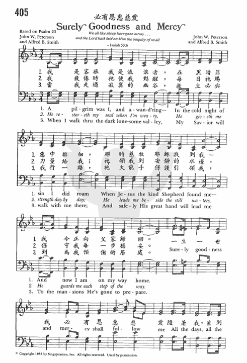
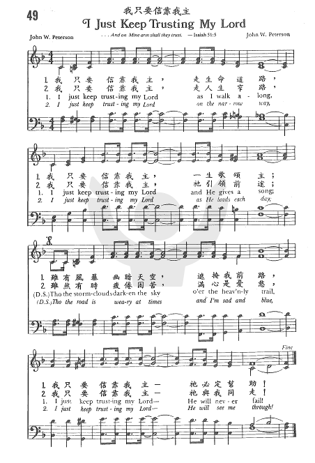
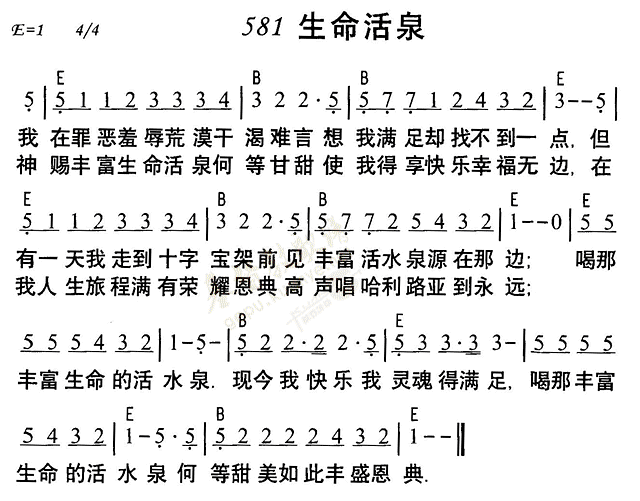
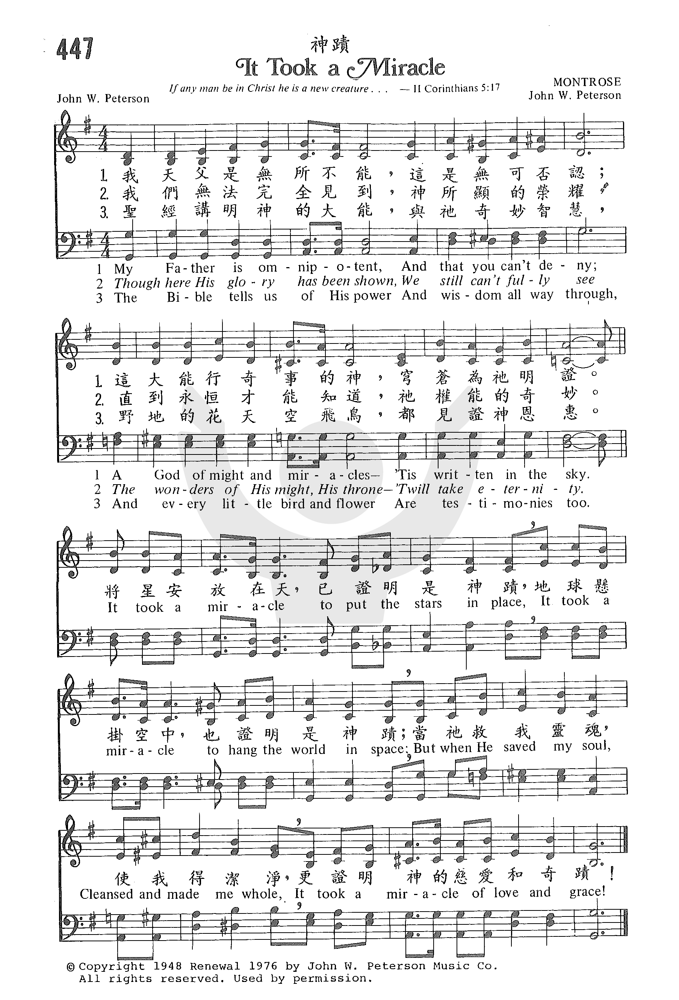

1451 GP163 Jesus Is the Friend of Sinners _Peterson,
John 救主耶稣，罪人良友
|
|
|
163 Jesus Is the Friend Of Sinners
• Jesus is the friend of sinners, Friend of sinners, friend of sinners,
Jesus is the Friend of sinners; He can set you free.
• If you trust Him, He will save you, He will save you, He will save you, If
you trust Him, He will save you, give you life anew.
• He will walk along beside you, Walk beside you, Walk beside you; He will
walk along beside you, guide you day by day.
• He will lead you on to glory, On to glory, on to glory; He will lead you
on to glory, Home forevermore! |
救主耶穌罪人良友，
救主耶穌罪人良友；
救主耶穌罪人良友，使你得自由。
你若信他，祂必救你，
你若信祂祂必救你；
你若信祂，祂必救你，賜你新生命。
祂必一路與你同行，
祂必一路與你同行；
祂必一路與你同行，每日引導你。
祂必領你進入榮耀，
祂必領你進入榮耀；
祂必領你進入榮耀；永遠的天家！
|
|

https://www.zanmeishige.com/tab/25520.html?songbook=1&index=163 |
|
|
|

-
Jesus Is A Friend Of Sinners - The Peterson Trio - YouTube
第一次世界大战结束时，无线电通讯技术改变了人类的生活。
第二次世界大战后，电视对人们生活又产生了重大的影响。教会欢迎这两种媒介，并利用来传福音。反过来，它们又影响了教会生活和教会音乐。二十世纪的后半叶，世界进入了一个电子时代。电子乐器、高能影像和音响产生了新一代的流行音乐。摇滚乐以其强劲的节奏和音量与充满反叛的精神吸引并风靡青年一代。教会虽然无法接受这种音乐，但也间接受到流行音乐的影响。
从亚历山大(Charles Alexander,见第八章)在慕迪的露天布道大会上使用钢琴之后，教堂的聚会和崇拜也陆续开始使用钢琴。而这个乐器以前却是一向被视为世俗乐器的，因为钢琴有打击乐的音色，可以弹节奏强的乐曲，还可以弹许多装饰音，这些正是流行音乐的特色，但不为教会的传统观念所接纳。
(Charles Alexander
二十世纪早期的福音圣诗作曲家B.B.麦坚尼（B.
B. McKinney，见第八章）在作曲上已接受了新音乐的影响，在他所作的圣诗曲里，节奏已开始使用半音、附点音符、十六分音符和切分音；节拍使用轻快的3/4、6/4、6/8拍子（已见于第八章）。
B. B. McKinney
四十年代，布道家葛培理邀请流行歌唱家在布道会上演唱，他的音乐指挥Barrows在布道会上也大胆选用接近流行音乐风格的福音诗歌和短歌。
四十年代，John Peterson模仿荷理活（好莱坞）电影歌曲风格创作圣歌，轰动了福音派的会众。
六十年代William和Gloria
Gaither（夫妇）用乡村音乐和西部音乐风格写福音诗歌，并在全国巡回表演，受到各地听众的热烈欢迎。[1]又如灵恩派的崇拜队，手持麦克风，用吉他、手鼓（铃鼓）、钢琴或电子音响合成器（synthesizer）伴唱的形式，正是流行音乐在舞台表演的形式。
John Peterson
William和Gloria
Gaither
会众受了流行音乐的影响，不喜欢一百年前旋律和节奏都较平淡的圣诗，而喜欢唱新歌词、新曲调、新节奏和新乐器伴奏的圣歌了。于是，针对群众这种喜好，部分作曲家也用流行曲的节奏和风格为圣诗或短歌谱曲。
六十年代，是世俗流行音乐对教会冲击最大的一个年代。（这个问题于本书第六章谈到英国二十世纪的圣诗时已略提及）。这个冲击首先出现在英国，很快蔓延到美国。从五十年代中期开始，英国教会的作曲已有倾向「轻音乐」、「流行音乐」和「民歌」的迹象，领头人是英国安立甘教会的牧师标芒（Geoffrey
Beaumont，1903-1970，见第六章）。他在谈到崇拜音乐时说：「崇拜音乐不但应该包括历史上音乐大师的作品，还应当有现代的通俗音乐，因为它是现代人生活的一部分」。一九五六年，他组织了一个「青年轻音乐队」，创作并表演具有现代流行音乐风格的宗教音乐作品，又作了《二十世纪民间弥撒》（或称《爵士弥撒》见于第六章）。
Geoffrey Beaumont，1903-1970
标芒和他的同道宣称他们作这些新音乐的目的是：用教会内外的青年所能理解的音乐语言传福音。这个弥撒的唱法是先由一个人领唱一句，接着会众重复这句。生动的唱法，加上优美的旋律及丰富的和声，使演出很成功。他们继续作了一些轻音乐风格的曲调谱上传统的圣诗歌词，在英国BBC电台演唱，向社会推广。
美国作曲家Herbert G. Draesel仿效标芒，也作了一首类似民间弥撒的乐曲Rejoice。天主教梵帝冈第二次会议之后，天主教的音乐人也照样作了许多民间弥撒（用吉他伴奏齐唱曲）。全部乐曲都配上录音带以便于流行。
Herbert G. Draesel
随后，是英国的波根（Michael Baughen）和他的朋友成立的「欢乐组」(Jubilate
Group)在美国和英国出版他们作的《青年赞美诗》（Youth
Praise），《诗篇颂》（Psalm
Praise）和《今日教会圣诗》（Hymns.for
Today’s Church）。这个组织发展到四十人，其中不乏知名的作家和作曲家，如：
Michael Baughen
(Jubilate Group
Youth Praise
Psalm Praise
Hymns.for Today’s Church
M01
近代福音詩歌及短歌作者
Gospel Folk Hymns
https://hymnary.org/person/Peterson_JW
彼得生（John
W. Peterson, 1912 - 2006），他是現代最偉大的聖樂作曲家，第二次世界大戰後，他被稱為「現代福音詩歌作家之王」，他作的聖詩逾一千二百多首，清唱劇有廿五本，每年有數不清的詩班，在復活節和聖誕節時演唱他的清唱劇。諸如「無比的愛」（No
Greater Love），「你看你的王」（Behold
Your King），「超越的愛」（Love
Transcending）等等。他作品的特色是順口易唱，靈力充沛，字間行�婺g常引用聖經詞句。他著名的聖詩有「必有恩惠慈愛」（Surely
Goodness and Mercy），「主必再來」（Jesus
Is Coming Again）等。
他作品的特色是順口易唱，靈力充沛，字間行�婺g常引用聖經詞句。他著名的聖詩有「必有恩惠慈愛」（Surely
Goodness and Mercy），「主必再來」（Jesus
Is Coming Again）等。
- Heaven Came Down",
- So Send I You",
- It Took A Miracle",
- Surely Goodness and Mercy",
- Shepherd Of Love",
- Jesus Is The Friend Of Sinners",

https://www.zanmeishige.com/tab/26030.html?songbook=1&index=455
|
Author: John W. Peterson
Tune: HEAVEN CAME DOWN (Peterson) |
|
|
Verse 1
O what a wonderful wonderful day
Day I will never forget
After I'd wandered in darkness away
Jesus my Savior I met
O what a tender compassionate friend
He met the need of my heart
Shadows dispelling with joy I am
telling
He made all the darkness depart
Chorus 1
Heaven came down and glory filled my
soul
When at the cross the Savior made me
whole
My sins were washed away
And my night was turned to day
Heaven came down and glory filled my
soul
Verse 2
Born of the Spirit with life from
above
Into God's fam'ly divine
Justified fully through Calvary's
love
O what a standing is mine
And the transaction so quickly was
made
When as a sinner I came
Took of the offer of grace
He did proffer He saved me
O praise His dear name
Verse 3
Now I've a hope that will surely
endure
After the passing of time
I have a future in heaven for sure
There in those mansions sublime
And it's because of that wonderful
day
When at the cross I believed
Riches eternal and blessings
supernal
From His precious hand I received |
諸天下降，主榮耀滿我心
一
那是何等奇妙、奇妙日子，我永遠不能忘記；
黑暗路上我正漂流、迷失、我救主忽然相遇。
祂是何等溫柔、慈憐朋友，滿足我心的需求；
一切陰影消除，我歡樂傅述；
祂將一切黑暗驅走！
（副）諸天下降，主榮耀滿我心，
我藉十架蒙拯救得更新；
我罪已經洗淨，我黑夜轉為光明—
諸天下降，主榮耀滿我心！
二
從聖靈而生，得屬天生命，神家門為我大開；
完全稱義，地位我已立定，藉著加略的大愛。
當我這罪人向救主求告，就立即與神和好；
得著祂所恩賜
浩大的福祉，
我要讚美救主名號。
三
我的盼望今有確實把握，當我走完今世途；
在天上我有穩妥的居所，何等華美的住處。
都因我曾在那奇妙日子，信十架無比價值；
從祂釘痕手中
得福氣無窮，
領受永遠豐富賞賜。 |
|
|
|
媒體
詩歌賞析： 天上榮耀，將我心靈充滿
Heaven
Came Down and Glory Filled My Soul
http://www.hymncompanions.org/Feb/04/stream.php
逆風使飛機上昇，雷雨解夏日悶熱，風經樹稍而鳴，信徒經歷試煉時，天上榮光充滿心靈，驅黑暗轉光明。
1961年夏，彼得生在費城聖經研討會中聽到一個人作見證，他說：「有一夜我與主相遇，當時感覺到，天上榮光充滿我心靈。」同週內，彼得生就作了這首歌。
每一個聖樂的愛好者，大概都熟悉彼得生（John W. Peterson, 1912 - 2006）這個名字，他是現代最偉大的聖樂作曲家，第二次世界大戰後，他被稱為「現代福音詩歌作家之王」，他作的聖詩逾一千二百多首，清唱劇有廿五本，每年有數不清的詩班，在復活節和聖誕節時演唱他的清唱劇。諸如「無比的愛」（No
Greater Love），「你看你的王」（Behold
Your King），「超越的愛」（Love
Transcending）等等。
他作品的特色是順口易唱，靈力充沛，字間行�婺g常引用聖經詞句。他著名的聖詩有「必有恩惠慈愛」（Surely
Goodness and Mercy），「主必再來」（Jesus
Is Coming Again）等。
彼得生是一位為耶穌放棄百萬財富的聖詩作家。
他出身於堪薩斯的一個瑞典音樂世家，自小就有音樂稟賦，曾屢次獲音樂比賽獎。
畢業於芝加哥音樂院，十八歲時就和他的兩個兄弟在電台上，從事福音廣播的工作。
「日落西山」（Over
the Sunset Mountain）是他開始嶄露頭角的作品，當他請出版商印刷發行時，出版商對他說：「你這首歌，詞和曲都好極了，就是宗教味太濃，如能把「耶穌」兩字去掉，我保證你很快可成百萬富翁。」彼得生堅決地回答說：「我寫這首詩就是為了這個名字，去了祂，這首詩也就沒有存在的價值了。」
第二次世界大戰時，他曾參加美國空軍，服役於亞洲戰區。
許多作品的靈感醞釀於該時。 戰後復員，他就讀於慕迪聖經書院。
他在廣播電台，每週主持廿餘節目。1967年，他獲美國福音影片基金會「聖樂獎」。
他的三個女兒經常在電台，合唱他的作品。
他是美國最大聖樂出版商之一「靈歌社」（Singspiration
Inc.）的社長兼總編輯。

|
Author: John W. Peterson (1958); Author:
Alfred B. Smith (1958)
[A pilgrim was I and a wand'ring] |
必有恩惠慈愛
Surely Goodness and Mercy |
|
A pilgrim was I and a-wand'ring,
In the cold night of sin I did roam,
When Jesus the kind Shepherd found
me,
And now I am on my way home.
Chorus:
Surely goodness and mercy shall
follow me
All the days, all the days of my
life;
Surely goodness and mercy shall
follow me
All the days, all the days of my
life.
He restoreth my soul when I'm weary,
He giveth me strength day by day;
He leads me beside the still waters,
He guards me each step of the way.
When I walk thro' the dark lonesome
valley,
My Savior will walk with me there;
And safely His great hand will lead
me
To the mansions He's gone to
prepare.
Extended Chorus:
And I shall dwell in the house of
the Lord forever,
And I shall feast at the table
spread for me;
Surely goodness and mercy shall
follow me
All the days, all the days of my
life.
Added after last Chorus only:
All the days, all the days of my
life. |
我是客旅，我是流浪者，在黑夜罪惡中徘徊，
那時慈牧耶穌找到我
– 我今正向父家歸回。
我疲倦時祂使我甦醒，每日祂賜力量給我；
祂領我到安歇的水邊，保守我每一步穩妥。
當我走過寂寞的幽谷，救主必與我行一路，
祂大能手保護引領我，到為我預備的居處。
（副歌）
一生一世我必有恩惠慈愛隨著我，直到永永遠遠；
一生一世我必有恩惠慈愛隨著我，直到永永遠遠。
我要住在耶和華的殿中到永遠，
敵人面前為我擺設筵席，
一生一世我必有恩惠慈愛隨著我，直到永永遠遠；
隨著我，直到永永遠遠。 |
|
|
|
媒體
詩歌賞析： 《必有恩惠慈愛
》 Surely
Goodness and Mercy
每一個聖樂的愛好者，大概都熟悉彼得生（John W. Peterson）這個名字，他是現代最偉大的聖樂作曲家，畢業芝加哥音樂院。第二次世界大戰後，他被稱為「現代福音詩歌作家之王」，他作的聖詩逾一千二百多首，清唱劇有廿五本，每年有數不清的詩班，在復活節和聖誕節時演唱他的清唱劇。
諸如「無比的愛」（No
Greater Love），「你看你的王」（Behold
Your King），「超越的愛」（Love
Transcending）等等。他作品的特色是順口易唱，靈力充沛，字間行�婺g常引用聖經詞句。
他著名的聖詩有「必有恩惠慈愛」（Surely
Goodness and Mercy），「主必再來」（Jesus
Is Coming Again）等。
這首聖詩是他受現實社會壓力排擠下，看到人情的冷酷，朋友背信，假面具後醜陋的人性，有感而發的作品。
他是一位為耶穌放棄百萬財富的聖詩作家。
彼得生出身於堪薩斯的一個瑞典音樂世家，自小就有音樂稟賦，曾屢次獲音樂比賽獎。他在十八歲時就和他的兩個兄弟在電台上，從事福音廣播的工作。「日落西山」（Over
the Sunset Mountain）是他開始嶄露頭角的作品，當他請出版商印刷發行時，出版商對他說：「你這首歌，詞和曲都好極了，就是宗教味太濃，如能把「耶穌」兩字去掉，我保證你很快可成百萬富翁。」彼得生堅決地回答說：「我寫這首詩就是為了這個名字，去了祂，這首詩也就沒有存在的價值了。」
第二次世界大戰時，他曾參加美國空軍，服役於亞洲戰區，許多作品的靈感醞釀於該時。
戰後復員，他就讀於慕迪聖經書院。
他在廣播電台，每週主持廿多個節目。1967年，他獲美國福音影片基金會「聖樂獎」。
他的三個女兒經常在電台上，合唱他的作品。
他是美國最大聖樂出版商之一「靈歌社」（Singspiration
Inc.）的社長兼總編輯。
Psalm 23:6 Surely your goodness and
love will follow me all the days of my life, and I will dwell in the house of
the LORD forever.
史亞瑟（Alfred
B. Smith），他就讀於茱麗亞音樂學校及慕迪聖經學院。
他在惠敦學院（Wheaton
College）讀書時，曾和葛理翰博士同寢室，是葛理翰佈道團的第一位領唱者。
1941年史亞瑟開始他的音樂出版事業。
1954年他被彼得生（John
W. Peterson）聘為音樂編審，他和彼得生曾合作「必有恩惠與慈愛」（Surely
Goodness and Mercy）的詞曲。
彼得生另有一首詩歌「我只要信靠我主」，二首詩相連，就是基督徒生活的座右銘：
「我只要信靠我主，一生一世必有恩惠慈愛隨著我。」
Author: John W. Peterson
Tune: [Shepherd of love, You know I had lost my way]


https://musescore.com/user/30522520/scores/6372529
|
|
|
|
Shepherd of love
You knew I had lost my way.
Shepherd of love,
You cared when I’d gone astray.
You sought and found me,
Placed around me
Strong arms that carry me home.
No foe can harm me,
Or alarm me,
Never again will I roam.
Shepherd of love,
Savior and Lord and guide
Shepherd of love,
Forever I’ll stay by Your side.
You sought and found me,
Placed around me
Strong arms that carry me home.
No foe can harm me,
Or alarm me,
Never again will I roam.
Shepherd of love,
Savior and Lord and Guide
Shepherd of love,
Forever I’ll stay by Your side.
Forever I’ll stay by Your side. |
|
|
|
|
媒體
Shepherd of Love - YouTube
Shepherd
Of Love EVIE https://youtu.be/7S6-C6l1MxE

|
Author: John W. Peterson, 1921-2006
Tune: TRUSTING
John W. Peterson |
|
|
1 I just keep trusting my Lord as I
walk along,
I just keep trusting my Lord and He
gives a song;
Tho’ the storm clouds darken the sky
o'er the heav'nly trail,
I just keep trusting my Lord—He will
never fail!
He's a faithful friend, such a
faithful friend
I can count on Him, to the very end.
Tho’ the storm clouds darken the sky
o'er the heav'nly trail,
I just keep trusting my Lord—He will
never fail!
2 I just keep trusting my Lord on
the narrow way,
I just keep trusting my Lord as He
leads each day;
Tho the road is weary at times and
I'm sad and blue,
I just keep trusting my Lord— He
will see me through!
He's a faithful guide, such a
faithful guide,
He is always there walking by my
side;
Tho the road is weary at times and
I'm sad and blue,
I just keep trusting my Lord— He
will see me through!
Source: Praise! Our Songs and Hymns
#322 |
我只要信靠我主，走生命路，
我只要信靠我主，一生歌頌主；
雖有風暴幽暗天空，遮掩我前路，
我只要信靠我主，，祂必定幫助！
祂是我良友，忠實的良友，
我能信靠祂，一直到永久；
雖有風暴幽暗天空，遮掩我前路，
我只要信靠我主，，祂必定幫助！
我只要信靠我主，走人生窄路，
我只要信靠我主，祂引領前途；
雖然有時疲倦困苦，滿心是憂愁，
我只要信靠我主，祂與我同走！
祂是我嚮導，忠實的嚮導，
常在我身旁，扶持與引導；
雖然有時疲倦困苦，滿心是憂愁，
我只要信靠我主，祂與我同走！
\ |
|
|
|
媒體
I Just Keep Trusting My Lord
https://youtu.be/tgCkBThOmKk
I Just Keep Trusting My Lord by the
Sentrys
https://youtu.be/Cxoi12x7fb0

|
Author: John W. Peterson
Tune: [I thirsted in the barren land of sin and shame] |
|
|
Springs of Living Water Lyrics
I thirsted in the barren land of sin
and shame,
And nothing satisfying there I
found;
But to the blessed cross of Christ
one day I came,
Where springs of living water did
abound.
Chorus
Drinking at the springs of living
water,
Happy now am I, my soul they
satisfy;
Drinking at the springs of living
water,
O wonderful and bountiful supply.
How sweet the living water from the
hills of God,
It makes me glad and happy all the
way;
Now glory, grace and blessing mark
the path I've trod,
I'm shouting Hallelujah every day.
O sinner, won't you come today to
Calvary?
A fountain there is flowing deep and
wide;
The Saviour now invites you to the
water free,
Where thirsting spirits can be
satisfied. |
|
|
|
|
媒體
活水詩班：生命活泉https://youtu.be/aSK181LQK7I
Springs Of Living Water w/Lyrics
https://youtu.be/yAtKphl9AaI
The Jacobs Brothers - Springs of Living
Water (1982)
https://youtu.be/hJHC8KxTcOY
http://www.hymncompanions.org/Nov/26/stream.php
基督徒走靈程常在荒漠中尋找甘泉，主是我們的活水泉源，惟有喝此活水，靈命始免乾渴。
這首詩歌的詞曲都是彼得生（John
W. Peterson, 1912 - ,見二月四日）所作。歌詞感人，旋律活潑輕快。
神既賜給我們生命的活泉，我們就該作祂的流通管，把我們所得的恩典流出去，為主作更多的見證。
有一首史浩博（Harper
G. Smyth, 1873-1945）所作的「生命是神的流通管」（Make
Me a Channel of Blessing）其歌詞如下：

|
Author: John W. Peterson
Tune: MONTROSE (Peterson) |
青年聖歌(Ⅱ)
59：需要神蹟
Eb
調 4/4 |
|
1. My Father is omnipotent, and that
you can´t deny;
A God of might and miracles, ´tis
written in the sky.
CHORUS:
It took a miracle to put the stars
in place;
It took a miracle to hang the world
in space.
But when he saved my soul, Cleansed
and made me whole,
It took a miracle of love and grace.
2. Though here his glory has been
shown, we still can’t fully see
The wonders of his might, his
throne, t’will take eternity.
3. The Bible tells us of his power
and wisdom all way through;
And every little bird and flower are
testimonies too.
4. The greatness of the Lord is seen
in everything he made,
But greater far the work he did when
on him my sin was laid. |
我天父是無所不能，這是無可否認；
這大能行奇事的神，已在穹蒼顯明。
真神榮耀雖已顯現，但仍未顯完全；
祂大能寶座的奇妙，必顯明到永遠。
聖經講明神的大能，與祂奇妙智慧；
野地花兒天空飛鳥，都見證神恩惠。
副歌：將星宿安放在天空需要神蹟，
將地球懸掛在太空需要神蹟，
當祂拯救我靈，使我得潔淨，
都需要慈愛、恩典的神蹟。 |
|
|
|
媒體
Hymns by George Beverly Shea - It Took a Miracle Live - YouTube
It Took A Miracle
https://youtu.be/mVHorsOngTE
http://www.hymncompanions.org/Jun/24/stream.php
神創造宇宙萬物，也統管一切的運行。神又給我們權利向祂呼求；諸如，約書亞求神將日頭停在基遍，以利亞求旱復求雨，吳勇長老得絕症蒙醫治等。
這種種的神蹟證明了神的慈愛和萬能。
這首歌的詞曲都是彼得生（John
W. Peterson, 1912 - ,見二月四日）所作。
彼得生服役美空軍時，他的伙伴們給了他一個「執事」綽號。
因為每晨在待命時，他都坐在隨身提箱上誦讀新約聖經。
彼得生決心為主而活，不論在任何狀況中，他都不以福音為恥。
在他飛越中國的駝峰時，更是他默想主禱告的好機會。
當他飛翔在喜瑪拉雅山的上空，神偉大的創造展示在他眼前，他俯視下面崎嶇的地域，仰望光芒萬丈的高空，他被偉大創造者的神奇所懾服。
戰後，彼得生進聖經學院攻讀，有一天在上「宣教」課時，他的思潮回溯到飛越中國的駝峰的時光，倏忽想到這位神，捨祂獨生愛子，為我們的罪被釘十架的主，他感于神的權能和慈愛，心中湧起了這首詩。
下課時，他急忙趕去琴室譜曲。
他自己對這首歌並不十分滿意，當它流行全國以至全球時，他都難以置信，但毫無疑問的，他確信神要在聖樂方面用他。
今日有許多人把神「人性化」，或把神蹟歸功於人。
我們必須全心全意認清我們天上的父是無所不能、無所不知、無所不在、創造奇蹟的神。
我們要有一個充實的生命，就必需在祂創造的萬有中，看到祂神蹟的完美。